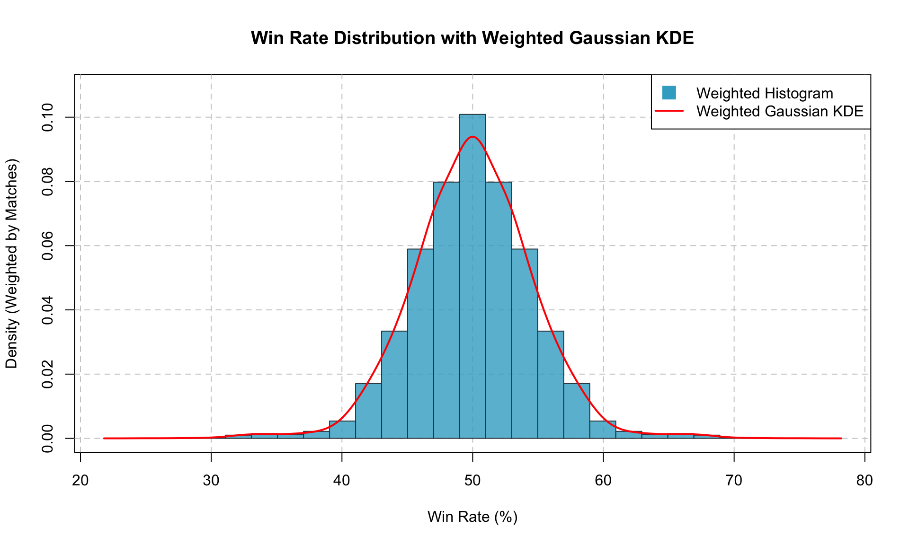

library(lpSolve)Optimal Rivalry: R Demo
Marvel Rivals Team Optimization
This arcticle is a demonstration of an undergraduate project I’ve done for the popular video game Marvel Rivals. Before I go into the details of the project, I want to give a brief overview of the game itself in case you are not already familiar with it. Marvel Rivals is a 6v6 team-based fighting game where players can choose from a roster of over 50+ Marvel characters to form a team and battle against other players.
Given the uniqueness of each character, the selection of roaster becomes an important factor in determining the outcome of a match (asides from obvious factors like player skill). The goal of this demo is to demonstrate This project is to model how a clssical optinmization in Von Neumann’s game theory can be applied to modern video games.
Data Collection
This project will mostly be using two dataset from the GitHub repository Optimal_Rivalry which was made by… well me, the author of this article and a few classmates in her undergraduate years. We will primarily be using two datasets from the repository (both were scrapped from a third-party website RivalsMeta):
- MarvelRivals_NumMatches_Matrix.csv: This is a matrixized dataset that contains the number of matches played between each pair of characters in the game. The rows and columns of the matrix represent the characters, and the values in the matrix represent the number of matches played between each pair of characters. This dataset will be used to calculate the win rates between each pair of characters.
- MarvelRivals_WinRate_Matrix.csv: This is a matrixized dataset that contains the win rates of each pair of characters in the game. The rows and columns of the matrix represent the characters, and the values in the matrix represent the win rate of each pair of characters. This dataset will be used to analyze the performance of different character combinations.
From there we will construct a Payoff Matrix using a Gaussian Kernel Density Estimation technique to estimate the win rates between each pair of characters. The Payoff Matrix will be the basis of a classical optimization problem in Von Neumann’s game theory.
base_url <- "https://raw.githubusercontent.com/MisShenanigans/Optimal_Rivalry/main/"
read_matrix <- function(filename) {
as.matrix(read.csv(paste0(base_url, filename), row.names = 1,
check.names = FALSE))
}
win_rate_matrix <- read_matrix("MarvelRivals_WinRate_Matrix.csv")
match_count_matrix <- read_matrix("MarvelRivals_NumMatches_Matrix.csv")
heroes <- rownames(win_rate_matrix)
stopifnot(!anyDuplicated(heroes), length(heroes) >= 6,
setequal(heroes, colnames(win_rate_matrix)),
setequal(heroes, rownames(match_count_matrix)),
setequal(heroes, colnames(match_count_matrix)))
win_rate_matrix <- win_rate_matrix[heroes, heroes]
match_count_matrix <- match_count_matrix[heroes, heroes]
stopifnot(all(is.finite(win_rate_matrix)),
all(win_rate_matrix >= 0 & win_rate_matrix <= 100),
all(is.finite(match_count_matrix)), all(match_count_matrix > 0))
message("Downloaded and aligned both matrices by hero name.")
cat("Win-rate matrix:", dim(win_rate_matrix), "\n")Win-rate matrix: 56 56 cat("Match-count matrix:", dim(match_count_matrix), "\n")Match-count matrix: 56 56 The data currently contain 56 heroes.
weighted_kde <- function(values, weights) {
stopifnot(length(values) == length(weights), length(values) > 1,
all(is.finite(values)), all(is.finite(weights)),
all(weights > 0), length(unique(values)) > 1)
p <- weights / sum(weights)
mean_value <- sum(p * values)
effective_n <- 1 / sum(p^2)
variance <- sum(p * (values - mean_value)^2) / (1 - sum(p^2))
bandwidth <- sqrt(variance) * effective_n^(-1 / 5)
# Combine identical rates after calculating the original weighted variance.
rates <- sort(unique(values))
masses <- vapply(rates, function(rate) sum(p[values == rate]), numeric(1))
list(
bandwidth = bandwidth,
density = function(points) vapply(points, function(point) {
sum(masses * dnorm(point, mean = rates, sd = bandwidth))
}, numeric(1)),
integral = function(lower, upper) {
sum(masses * (pnorm(upper, rates, bandwidth) -
pnorm(lower, rates, bandwidth)))
}
)
}
win_rates <- as.vector(win_rate_matrix)
num_matches <- as.vector(match_count_matrix)
kde <- weighted_kde(win_rates, num_matches)
low <- min(win_rates)
high <- max(win_rates)
total_mass <- kde$integral(low, high)
unique_rates <- sort(unique(win_rates))
utilities <- vapply(unique_rates, function(rate) {
round(2 * kde$integral(low, rate) / total_mass - 1, 2)
}, numeric(1))
A <- matrix(utilities[match(win_rates, unique_rates)],
nrow = length(heroes), dimnames = list(heroes, heroes))
cat(sprintf("Win-rate range: %.2f%% to %.2f%%; KDE mass: %.6f\n",
low, high, total_mass))Win-rate range: 25.12% to 74.88%; KDE mass: 0.999893The Payoff Matrix is a normalized to be normally distributed with a mean of 0 and distributed between -1 and 1. The normalization is done to ensure that the optimization problem is well-defined and to avoid numerical instability. The Payoff Matrix will be used to find the optimal strategy for each player in the game. The KDE should look like a bell curve with the peak at the mean of 0 and the tails extending in both directions:
Visualizing the KDE
breaks <- seq(low, high, length.out = 26)
bin <- findInterval(win_rates, breaks, all.inside = TRUE)
bin_weight <- vapply(seq_len(25), function(i) {
sum(num_matches[bin == i])
}, numeric(1))
hist_density <- bin_weight / (sum(num_matches) * diff(breaks))
x_grid <- seq(low - 3 * kde$bandwidth, high + 3 * kde$bandwidth,
length.out = 600)
y_grid <- kde$density(x_grid)
plot(x_grid, y_grid, type = "n",
ylim = c(0, max(hist_density, y_grid) * 1.08),
main = "Win Rate Distribution with Weighted Gaussian KDE",
xlab = "Win Rate (%)", ylab = "Density (Weighted by Matches)")
grid(col = "grey80", lty = "dashed")
rect(head(breaks, -1), 0, tail(breaks, -1), hist_density,
col = adjustcolor("#39accb", alpha.f = 0.8), border = "#34454f")
lines(x_grid, y_grid, col = "red", lwd = 2)
legend("topright", c("Weighted Histogram", "Weighted Gaussian KDE"),
pch = c(15, NA), col = c("#39accb", "red"),
lty = c(0, 1), lwd = c(0, 2), pt.cex = 2, bg = "white")
Introduction to the Problem
Given a known opponent team, how can we choose six heroes to maximize our team’s matchup score? We model this as a binary optimization problem inspired by game theory.
Problem Setup
- Let \(x \in \{0,1\}^{56}\) represent our team, the row player’s selection. Each entry equals 1 if the corresponding hero is selected and 0 otherwise.
- Let \(y \in \{0,1\}^{56}\) represent the opponent’s team, the column player’s selection. For this problem, \(y\) is fixed and known.
- Each team contains exactly six heroes.
- Let \(A \in \mathbb{R}^{56 \times 56}\) be the payoff matrix, where \(A_{ij}\) measures the matchup score of our hero \(i\) against the opponent’s hero \(j\).
Our team’s total matchup score is \(x^\top A y\), which adds the scores across all pairs of selected heroes.
Optimization Objective
We choose \(x\) to solve:
\[ \begin{aligned} \max_{x \in \{0,1\}^{56}} \quad & x^\top A y \\ \text{subject to} \quad & \sum_{i=1}^{56} x_i = 6. \end{aligned} \]
The opponent’s fixed team also satisfies:
\[ y \in \{0,1\}^{56}, \qquad \sum_{i=1}^{56} y_i = 6. \]
Next, we define helper functions to convert between hero names and binary team vectors, along with example teams for both players.
team_size <- 6L
n <- length(heroes)
team_to_vector <- function(team) {
if (length(team) != team_size || anyDuplicated(team) ||
!all(team %in% heroes)) {
stop("Choose exactly six distinct, valid hero names.")
}
as.integer(heroes %in% team)
}
vector_to_team <- function(x) heroes[x > 0.5]
Avengers <- c("Black Widow", "Iron Man", "Thor", "Hulk", "Hawkeye",
"Captain America")
Xmen <- c("Magneto", "Psylocke", "Wolverine", "Magik", "Storm", "Emma Frost")For example, if an opponent team consists the Avengers, and our team consists of the X-Men, the outcome of the utility function \(x^\top A y\) will be the total matchup score of our team against the opponent’s team. The goal is to find the optimal selection of heroes for our team that maximizes this score.
x <- team_to_vector(Xmen)
y <- team_to_vector(Avengers)
example_score <- drop(t(x) %*% A %*% y)
cat(sprintf("X-Men versus Avengers model score: %.2f\n", example_score))X-Men versus Avengers model score: 3.023.02 is a positive score, which means that the X-Men team is expected to have an advantage over the Avengers team in a matchup. The higher the score, the better our team’s performance against the opponent’s team.
Optimal Team Selection:
It turns out, when the enemy team is known, it is fairly easy to find the optimal team slelection using lpSolve. When the opponent team is the Avengers, the optimal team selection is:
optimal_counter <- function(opponent) {
y <- team_to_vector(opponent)
contributions <- drop(A %*% y)
fit <- lpSolve::lp(
direction = "max", objective.in = contributions,
const.mat = matrix(1, nrow = 1, ncol = n),
const.dir = "=", const.rhs = team_size, all.bin = TRUE
)
if (fit$status != 0) stop("The counter-team solver did not confirm optimality.")
chosen <- which(fit$solution > 0.5)
stopifnot(length(chosen) == team_size)
data.frame(Hero = heroes[chosen], Contribution = contributions[chosen])
}
counter <- optimal_counter(Avengers)
knitr::kable(counter, digits = 2, row.names = FALSE,
caption = "Optimal counter-team against the Avengers.")| Hero | Contribution |
|---|---|
| Devil Dinosaur | 3.80 |
| Peni Parker | 5.93 |
| Magik | 3.04 |
| Storm | 3.10 |
| Mantis | 4.08 |
| Ultron | 3.91 |
counter_score <- sum(counter$Contribution)
cat(sprintf("Optimal counter-team score: %.2f\n", counter_score))Optimal counter-team score: 23.86Optimal Solution to Von Neumann Min Max Equation
In zero-sum games (which category this game falls into), the Von Neumann Minimax Theorem guarantees the existence of an optimal strategy that a player can adopt to maximize their worst-case outcome, regardless of what the opponent chooses.
The Minimax Formulation
Let A be the payoff matrix, where each entry A[i, j] represents how well hero i performs against hero j. Then the minimax objective is:
\[ \max_{\mathbf{x}} \ \min_{\mathbf{y}} \ \mathbf{x}^T A \mathbf{y} \]
xis our strategy (a 6-hero team, encoded as a binary vector of length 56)yis the opponent’s strategy (also a 6-hero team)- The game is zero-sum, meaning if we gain, the opponent loses equally.
This equation models the idea:
> What is the best team we can pick assuming the opponent will counter us in the worst way possible?
Why Minimax?
Unlike the base counter strategy (which assumes the opponent team is known), this problem assumes we don’t know the opponent’s team, and instead optimize for the safest possible team, one that performs reliably across the board. This is especially useful for a team of new players who has no idea about the game.
Implementation
And it turns out, the solution to the Min Max Question can be found relatively using sum_smallest() from CVXPY.
optimal_maximin <- function(A, team_size = 6L) {
n <- nrow(A)
B <- round(100 * A)
# Variable order: x[1:n], t_plus, t_minus, s[1:n].
objective <- c(rep(0, n), team_size, -team_size, rep(-1, n))
constraints <- rbind(
c(rep(1, n), 0, 0, rep(0, n)),
cbind(t(B), -1, 1, diag(n))
)
fit <- lpSolve::lp(
direction = "max", objective.in = objective,
const.mat = constraints,
const.dir = c("=", rep(">=", n)),
const.rhs = c(team_size, rep(0, n)),
binary.vec = seq_len(n)
)
if (fit$status != 0) stop("The maximin solver did not confirm optimality.")
selected <- as.integer(fit$solution[seq_len(n)] > 0.5)
stopifnot(sum(selected) == team_size)
opponent_scores <- drop(t(A) %*% selected)
worst <- order(opponent_scores, colnames(A))[seq_len(team_size)]
guaranteed <- sum(opponent_scores[worst])
stopifnot(abs(guaranteed - fit$objval / 100) < 1e-6)
list(team = rownames(A)[selected == 1],
opponent = colnames(A)[worst], score = guaranteed)
}
maximin <- optimal_maximin(A)
cat("Optimal team:", paste(maximin$team, collapse = ", "), "\n")Optimal team: Devil Dinosaur, Peni Parker, Daredevil, Magik, Mantis, Ultron cat("Worst-case opponent:", paste(maximin$opponent, collapse = ", "), "\n")Worst-case opponent: Peni Parker, Mantis, Magik, Ultron, Devil Dinosaur, Captain America cat(sprintf("Guaranteed model score: %.2f\n", maximin$score))Guaranteed model score: -0.04Conclusion
With the solution to the min max problem found, we conclude this demonstration of how classical optimization in Von Neumann’s game theory can be applied to modern video games. Note that the solution might change as the game is to have future updates and new characters are added to the game. The solution is also dependent on the accuracy of the payoff matrix, which is based on historical data and may not reflect future matchups.
Try it yourself
Edit the Python code below and click Run Code to explore the model. First run Load the matchup data, then try any of the three experiments. The first visit may take a little while to load Python and its packages; an internet connection is needed to load the data. Your edits affect your browser session only.
Use Start Over on a code block to restore its original code. To reset all variables as well, reload the page and run the data-loading block again.
Load the matchup data
This loads the same source matrices used above and recreates the payoff matrix. The list of hero names in the output is available for copying into your teams.
Find a counter-team
Change the six names in opponent. You can exclude heroes from your own team with unavailable. Sorting the individual contributions gives the exact best response for this additive model.